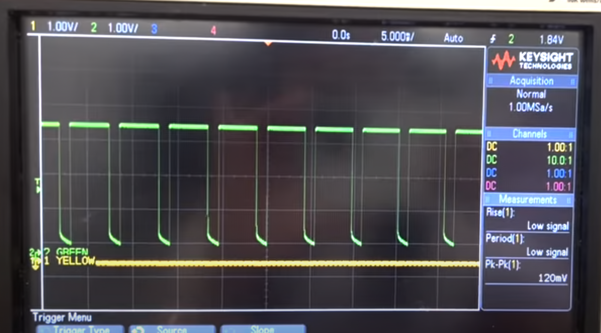
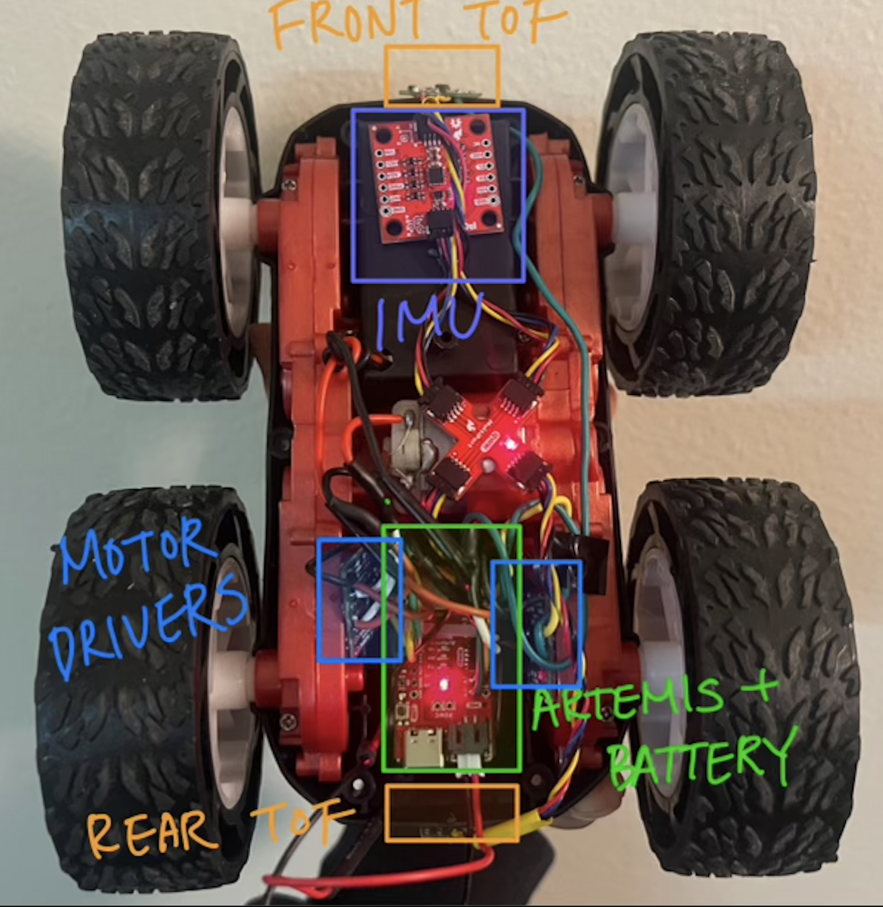

Lab 4: Motor Driver & Open Loop Control
Prelab
Below is the wiring diagram of my circuit. I followed the instructions to parallel-couple the input and output pins on the motor driver, allowing each motor to receive twice the current without overheating. To achieve this, I used different wiring techniques depending on the pin placement. For the inner pins, I stripped a single wire long enough to pass through both pins before soldering them together. For the outer pins, I initially used a small jumper to bridge the two connections, then inserted another wire into one of the pins to link it to the Artemis. While this method worked well for the input pins, I ran into issues with the output pins, which kept shorting when connected to the motor. To resolve this, I soldered separate wires to each output pin, then joined them at the motor, covering the exposed connections with heat shrink for insulation. I used solid-core wires as jumpers for easier soldering, but made sure to use stranded core wires for long connections so there is less risk of the wires breaking from twisting.
For inputs to the motor drivers, I decided to use pins 0, 1, 3, and 4 as they support PWM.
In addition to the 3.7V battery powering the Artemis, I soldered another 3.7V battery to the motor drivers to minimize noise and ensure that fluctuations in current draw from the motors wouldn’t affect the Artemis. I used an 850 mAh battery for the motors, as they require more current, while the Artemis is powered by a 650 mAh battery.
Tasks 1 & 2: PWM Signal Testing
Before fully integrating the motor drivers into the car, I tested them using Arduino's analogWrite() function.
I soldered the GND pin of the driver to one of the ground pins on the Artemis, connected the IN pins to pins 3 and 4 on the Artemis, then wired the Vin pin to the DC power supply.
I hooked up the output pins of the motor driver to the oscilloscope to see the resulting signals.
Below is a snapshot of the oscilloscope showing the signal.
Tasks 3 & 4: Motor Driver Testing
To test whether the motor drivers were properly driving the motors, I soldered the output pins of the motor drivers onto the motors. This is where I had a lot of trouble - the two sets of output pins kept shorting, forcing me to repeatedly desolder and resolder, which ended up taking the most time in this lab.
The code I used to test the motor drivers was very simple: I made the motors spin forward for 2 seconds, then reverse for 2 seconds, and stop for 2 seconds within the main loop. I set the PWM value to 200 instead of maxing out at 255, ensuring the car wouldn’t move excessively, especially since it was positioned on its side and not stable.
Below is a video testing the right wheels. A DC power supply was used to power the motor driver.
Below is a video testing the left wheels.
Below is the code used for testing. I commented out parts for each side.
Tasks 5 & 6: Connecting Batteries
After testing each motor driver powered by a DC supply, I soldered the battery leads to the Vin and GND pins of the motor drivers so I can use a 3.7V battery to supply power.
I tested the car with the same code I used above.
Below is a video testing the right wheels. A 3.7V battery was used to power the motor driver.
Below is a video testing the left wheels.
Task 7: Assembly
Below is a picture of my fully assembled car (for now). I tied the Artemis and the 650 mAh battery with a zip tie and placed it in the compartment where the original PCB was placed. I tucked the two motor drivers to the side of the compartments, attached the cross connector at the center of the car, and the IMU towards the front. I attached the two ToF sensors to the front and back of the car. I used Sticky tack as temporary measures, but as we move on, I plan on using more secure adheseves like electrical tape once I am set on the component placements.
Task 8: PWM Lower Limit
I found out that for my car (specifically in Upson 264), the lowest PWM value required for it to start moving was 35. Starting at 150, I gradually tested lower values until I found the smallest one that still allowed the car to move. After finding the value, I realized could have used a bluetooth command to change values instead of burning code into the Artemis every time.
Task 9: Calibration
After letting the car drive forward for about 1.5 seconds at max speed (255 for both motor drivers), I noticed that the car turned slightly to the left, meaning I had to reduce the PWM value for the right motor driver to balance the movement. I tried several values, and found that setting the right motor to 237 while keeping the left motor at 255 resulted in the car moving in a straight line.
Task 10: Open Loop Control
This is a little demo of my car driving!
Below is the code I used to implement this open-loop control. In future labs, I plan to create functions for the car’s movements, such as going straight, backward, and turning, to make the code more concise and easier to manage.
I added a timer so that the car drives for 1710 ms then comes to a stop. I added comments to describe the motion.
Discussion
This lab required a lot of patience, mainly because I was inexperienced in soldering. However, I really enjoyed it since it was my first time working with this much hardware.
References and Acknowledgements
- Jeffery Cai for helping with filming
- TAs for answering my questions
- Nila Narayan's website